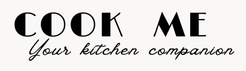

<div class="footer-container">

<div class="copyright">
    <a routerLink="" routerLinkActive="active" [routerLinkActiveOptions]="{ exact: true }"></a>
    <p>Cook Me - Copyright &copy;  2023</p>
</div>
    <div class="credits">
        Projet created by: 
        <ul>
            <li>Aguibou BARRY</li>
            <li>Hugo DEVIDAS</li>
            <li>Deborah NASH</li>
        </ul>
    </div>
    <div class="university">
        Project supervised by Mr. Réveillère, as part of the Web Programming course of the Master's degree in Computer Science and Software Engineering at the University of Bordeaux.
    </div>
</div>